REFILL STATION / OPERATOR MANUAL
리필 스테이션
사용 및 관리 설명서
기기 화면에서 설정하고 운영하는 방법입니다.
화면의 측정값과 설정값은 예시입니다. 이미지를 누르면 크게 볼 수 있습니다.
기기 사용 시작하기
고객은 디스펜스 화면에서 리필합니다. 전원을 켰을 때 열릴 화면은 관리 → 시스템 → 시작 화면에서 지정합니다. 기기 버전은 시스템 화면 아래의 제품 정보에서 확인합니다.
관리 화면으로 들어가기
- 홈으로 이동합니다.
디스펜스 화면 오른쪽 위 모서리를 3초 안에 5번 탭합니다. 페이지가 잠겨 있다면 비밀번호를 입력합니다.
- 홈의 관리를 누릅니다.
관리자 잠금이 켜져 있으면 비밀번호를 입력합니다.
- 왼쪽 목차에서 설정 항목을 선택합니다.
처음에는 잔량이 열립니다.
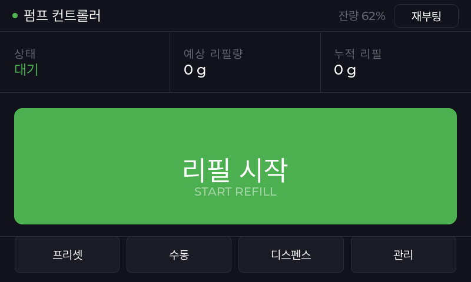
홈 화면의 기능
| 항목 | 기능 |
|---|---|
| 리필 시작 | 작동시간 제한 없이 펌프를 가동합니다. |
| 펌프 정지 | 작동 중인 펌프를 멈춥니다. |
| 프리셋 | 프리셋 설정에 미리 저장한 양을 선택해 리필합니다. |
| 수동 | 직접 입력한 양으로 리필합니다. |
| 디스펜스 | 고객용 리필 화면을 엽니다. |
| 예상 리필량 | 보정값으로 계산한 현재 또는 직전 리필량입니다. |
| 누적 리필 | 리필로 사용한 양의 합계입니다. |
| 재부팅 | 기기를 다시 시작합니다. |
재부팅 전에는 펌프가 멈춘 것을 확인합니다.
리필 진행 화면을 탭하면 일시정지합니다. 계속하려면 리필재개를 누릅니다. 끝내려면 빨간 정지를 누릅니다. 오류 화면에서는 오류를 확인한 뒤 이전을 누릅니다.
매장 운영 순서
영업 시작 전
- 제품명, 말통의 내용물, 사용 기한과 제품 상태를 확인합니다.
- 튜브 꺾임, 느슨한 연결, 노즐 막힘과 새는 곳이 없는지 확인합니다.
- 실제 말통과 표시 잔량을 비교합니다. 새 말통은 말통 교체, 부분 사용한 말통은 잔량 보정으로 입력합니다.
- 현재 사용할 보정과 고객에게 제공할 리필량을 확인합니다.
- 용기를 놓고 시험 리필합니다. 펌프 정지와 실제 배출량을 확인합니다.
- 고객용 디스펜스 화면으로 돌아갑니다.
운영 중과 마감
표시 잔량과 실제 말통을 함께 확인합니다. 공기가 섞이거나 흐름이 불규칙하면 고객 사용을 멈춥니다.
마감할 때는 리필을 끝내고 펌프 정지를 확인합니다. 노즐과 주변을 정리합니다.
제품·튜브·노즐·펌프·출력 설정을 바꾼 뒤에는 시험 리필합니다. 양이 맞지 않으면 다시 보정합니다.
캘리브레이션
홈 → 관리 → 캘리브레이션
배출된 양을 측정해 입력하면 목표량에 맞는 펌프 동작 시간을 계산합니다. 측정 → 실측량 입력 → 저장 → 사용할 보정 선택 순서로 진행합니다.
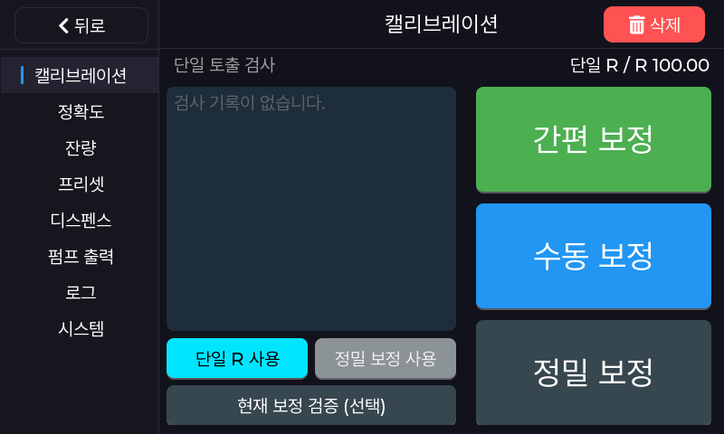
운영할 제품·튜브·노즐·출력 설정을 사용합니다. 넘치지 않을 용기를 준비합니다. 빈 용기 값을 제외하고 내용물만 측정합니다. 화면이 g이면 무게를, mL이면 부피를 같은 단위로 입력합니다.
흐름이 고르고 공기가 섞이지 않는 상태에서 측정합니다. 매 회차가 끝나면 남은 방울까지 받은 뒤 그 회차의 양을 기록합니다.
| 방식 | 측정 방법 | 저장되는 보정 |
|---|---|---|
| 간편 보정 | 설정된 시간 동안 1회 배출. 기본 5초. | 단일 R |
| 수동 보정 | 직접 시작하고 원하는 양에서 측정 완료. | 단일 R |
| 정밀 보정 | 두 시간 × 각 3회, 총 6회 측정. | 정밀 보정값 |
R은 1초 동안 배출되는 양입니다.
간편 보정
- 측정 시간을 확인합니다.
관리 → 정확도 → 캘리브 시간을 확인합니다. 기본값은 5초입니다.
- 용기를 놓고 간편 보정을 누릅니다.
펌프가 작동하고 남은 시간이 표시됩니다. 설정 시간이 끝나면 자동으로 멈춥니다.
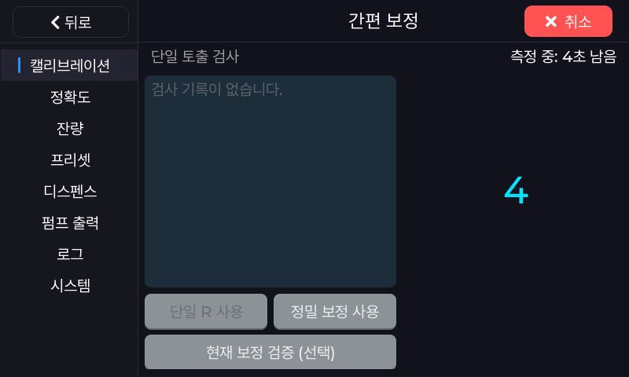
간편 보정 · 측정 중 - 실측량을 입력합니다.
남은 방울까지 받은 뒤 빈 용기 값을 제외하고 측정합니다. 화면 단위에 맞춰 실측량을 입력하고 저장을 누릅니다.
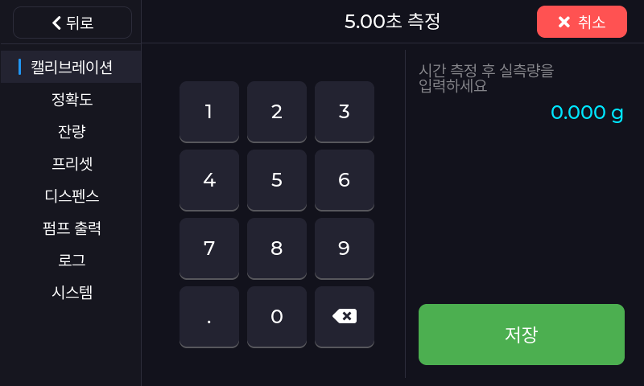
간편 보정 · 실측량 입력 - 보정값을 저장합니다.
제품·노즐 등 조건을 메모하고 메모와 저장을 누릅니다. 메모가 없으면 메모 없이 저장을 누릅니다. 저장 오류가 나오면 오류를 해결하고 다시 저장합니다.
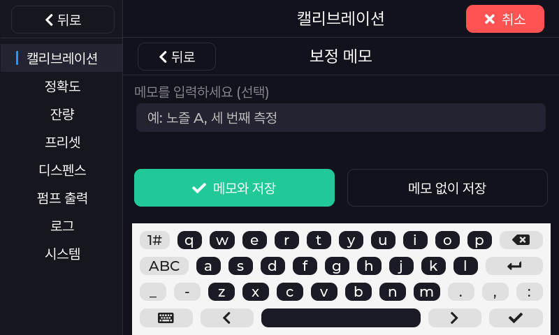
보정 메모와 저장 - 저장한 보정을 사용합니다.
캘리브레이션 첫 화면으로 돌아가 단일 R 사용을 누릅니다. 저장한 보정으로 시험 리필합니다.
수동 보정
직접 펌프를 시작하고 원하는 양에서 측정을 마치는 방식입니다.
- 용기를 놓고 수동 보정을 누릅니다.
펌프가 작동하고 경과 시간이 표시됩니다. 직접 측정을 마칠 때까지 지켜봅니다.
- 원하는 양에서 측정 완료를 누릅니다.
펌프가 멈춘 뒤 남은 방울까지 받습니다. 측정을 끝낼 때는 측정 완료를 사용합니다. 뒤로/취소는 측정을 취소합니다.
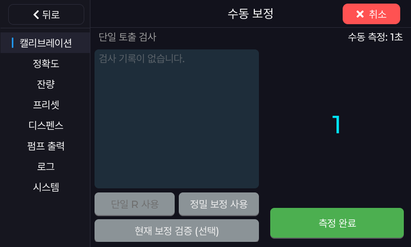
수동 보정 · 측정 중 - 실측량을 입력합니다.
빈 용기 값을 제외한 양을 화면 단위에 맞춰 입력하고 저장을 누릅니다.
- 보정값을 저장합니다.
메모와 저장 또는 메모 없이 저장을 누릅니다. 저장 오류가 나오면 오류를 해결하고 다시 저장합니다.
- 저장한 보정을 사용합니다.
캘리브레이션 첫 화면에서 단일 R 사용을 누릅니다. 저장한 보정으로 시험 리필합니다. 간편 보정과 같은 단일 R 값이 갱신됩니다.
정밀 보정 · 총 6회 측정
짧은 시간과 긴 시간에서 각각 3회, 총 6회 측정합니다. 매 회차를 따로 측정하고 입력합니다.
1/6 → 2/6 → 3/6
4/6 → 5/6 → 6/6
- 정밀 보정을 엽니다.
- 프로파일을 선택합니다.
프로파일 1~4 중 저장할 곳을 선택합니다. 기존 결과를 보관하려면 다른 프로파일을 선택합니다.
액체·튜브 번호에는 측정 조건을 기록할 수 있습니다.
- 두 시간을 설정합니다.
각 시간 버튼을 눌러 입력합니다. 각각 0.1~60초이며 서로 다른 값으로 정합니다.
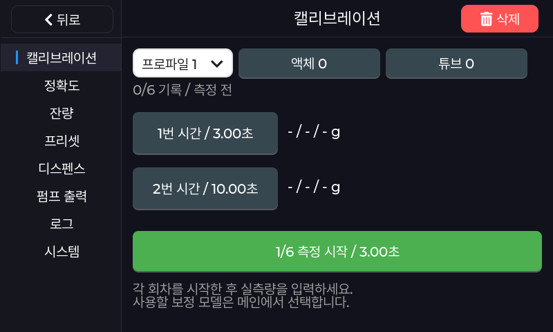
정밀 보정 · 측정 준비 - 용기를 놓습니다.
두 측정시간 모두 넘치지 않을 용기를 준비합니다. 화면의 시간을 확인합니다.
- 1/6 측정 시작을 누릅니다.
- 이번 회차의 실측량을 입력합니다.
자동으로 멈추면 남은 방울까지 받습니다. 빈 용기 값을 제외한 이번 회차의 양만 화면 단위에 맞춰 입력하고 저장을 누릅니다.
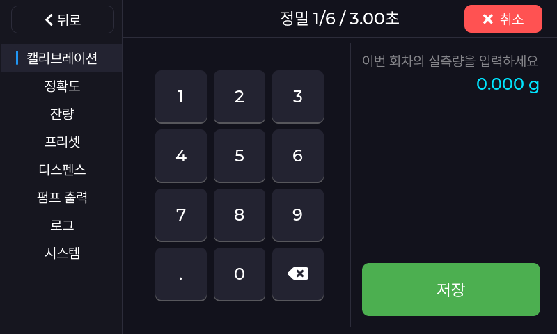
정밀 보정 · 회차별 입력 - 2/6부터 6/6까지 같은 방식으로 반복합니다.
매 회차 용기를 비우거나 새 용기를 놓습니다. 각 회차를 직접 시작하고 그 회차의 양만 입력합니다. 4/6부터는 두 번째 시간을 사용합니다.
- 마지막 입력 후 저장 완료를 확인합니다.
6번째 실측량을 확정하면 자동으로 계산·저장합니다. 6/6과 저장됨을 확인합니다. 오류가 나오면 해결한 뒤 다시 확정합니다. 추가 측정 시작을 누르면 새 6회 측정이 시작됩니다.
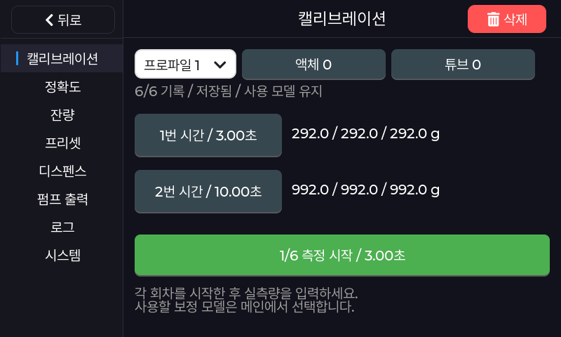
정밀 보정 · 6회 저장 완료 - 캘리브레이션 첫 화면으로 돌아갑니다.
저장한 프로파일을 확인합니다.
- 정밀 보정 사용을 누릅니다.
- 실제 판매량으로 시험 리필합니다.
가장 작은 판매량과 가장 큰 판매량을 각각 확인합니다.
측정 중 왼쪽 정지를 누르면 이번 회차만 취소됩니다. 이전 회차는 남습니다. 펌프 정지를 확인한 뒤 같은 회차를 다시 측정합니다.
뒤로/취소, 프로파일·시간 변경, 재부팅 후에는 1회부터 다시 측정합니다. 중단한 회차의 양은 입력하지 않습니다.
보정값은 어떻게 계산하나요?
기기는 각 시간에서 측정한 3개 값의 중앙값을 사용합니다. 작은 순서로 놓았을 때 가운데 값이며 평균값과 다릅니다. 두 시간 T1·T2의 중앙값을 M1·M2라고 하면 아래와 같이 계산합니다. 시간은 초, 양은 선택한 표시 단위 기준입니다.
b = M1 − a × T1
목표량에 필요한 시간 = (목표량 − b) ÷ a
예를 들어 3초의 측정값이 58·60·62 g, 10초의 측정값이 198·200·202 g이면 중앙값은 60 g과 200 g입니다. 이때 a = 20 g/s, b = 0 g입니다.
측정 범위 밖에서도 같은 식을 사용합니다.
사용할 보정 선택과 검증
보정값을 저장한 뒤 사용할 보정을 선택합니다. 캘리브레이션 첫 화면에서 단일 R 사용 또는 정밀 보정 사용을 누릅니다. 저장된 정밀값이 없는 프로파일은 정밀 보정 사용을 누를 수 없습니다.
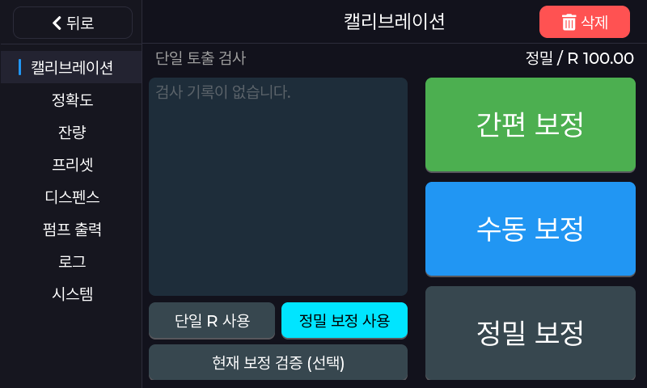
- 현재 보정 검증 (선택)을 엽니다.
먼저 검증할 보정을 선택합니다. 진행 중인 정밀 측정은 완료하거나 취소합니다.
- 검증 시간을 선택합니다.
15초·30초·60초 중 선택하거나 직접 입력합니다. 배출량을 받을 수 있는 용기를 놓습니다.
- 검증 시작을 누릅니다.
펌프가 멈추면 남은 방울까지 받습니다.
- 실측량을 입력합니다.
빈 용기 값을 제외한 양을 화면 단위에 맞춰 입력합니다. 예상량·실측량·차이·오차율을 확인합니다.
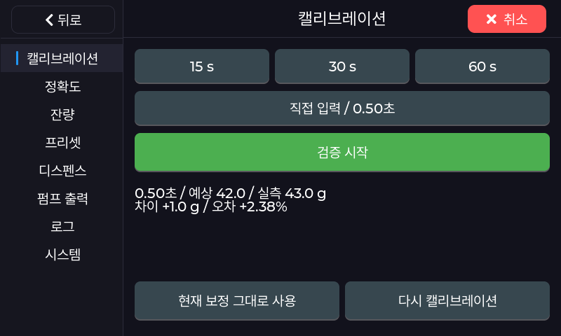
현재 보정 검증 · 결과 - 결과를 보고 다음 작업을 선택합니다.
계속 사용하려면 현재 보정 그대로 사용을 누릅니다. 다시 보정하려면 다시 캘리브레이션을 누른 뒤 보정 방식을 선택합니다.
차이는 실측량 − 예상량입니다. +는 예상보다 많이, −는 적게 나온 양입니다. 검증 후에도 보정값과 선택한 보정은 유지됩니다. 합격·불합격은 자동 판정하지 않습니다. 결과를 보고 사용할지 다시 보정할지 판단합니다.
검증은 선택한 보정값을 확인하는 절차입니다. 고객 화면의 미세 조정까지 확인하려면 실제 디스펜스 화면에서 시험 리필합니다.
기록·프로파일·삭제
| 동작 | 결과와 확인할 점 |
|---|---|
| 단일 토출 검사 → 사용 | 기록의 R을 복원합니다. 복원한 값으로 운영하려면 단일 R 사용을 누릅니다. |
| 첫 화면 → 삭제 | 확인창에서 승인하면 단일 보정 기록 목록을 지웁니다. 정밀 프로파일은 유지됩니다. |
| 프로파일 선택 | 열거나 측정할 프로파일을 선택합니다. 해당 값으로 운영하려면 정밀 보정 사용을 누릅니다. |
| 정밀 상세 → 삭제 | 선택한 프로파일의 정밀값을 바로 삭제합니다. 확인창이 없으므로 대상을 먼저 확인합니다. 사용 중인 값을 삭제하면 단일 R로 전환됩니다. |
정밀값을 삭제한 뒤 단일 R도 없다면 다시 보정한 후 고객에게 제공합니다.
단위와 정확도
홈 → 관리 → 정확도
정량 리필은 중량 설정을 기준으로 준비합니다. 보정한 뒤 사용할 보정을 선택하고 시험 리필합니다.
| 항목 | 설정의 의미 |
|---|---|
| 리필량 단위 | 리필량을 표시할 단위입니다. g 또는 mL이며 밀도에 따른 값 환산은 하지 않습니다. |
| 프리스탑 | 단일 R 사용 시 목표량에서 빼는 양입니다. 값을 늘리면 더 일찍 멈추며 정밀 보정에는 적용되지 않습니다. |
| 캘리브 시간 | 간편 보정의 측정 시간입니다. 기본 5초, 범위 1~60초입니다. |
| 미세 조정 | 계산된 토출 시간에 더하거나 빼는 값입니다. +는 더 오래, −는 더 짧게 작동합니다. |
측정·입력·프리셋은 같은 단위로 맞춥니다.
양이 계속 다르면 흐름과 보정값을 먼저 확인합니다. 미세 조정을 바꾼 뒤에는 같은 목표량으로 시험 리필합니다. 새 보정값을 저장해도 다른 정확도 설정은 유지됩니다.
잔량과 누적 리필
홈 → 관리 → 잔량
예상 잔량은 말통에 남았다고 계산한 양이고, 누적 리필은 기기가 집계한 리필 사용량입니다.
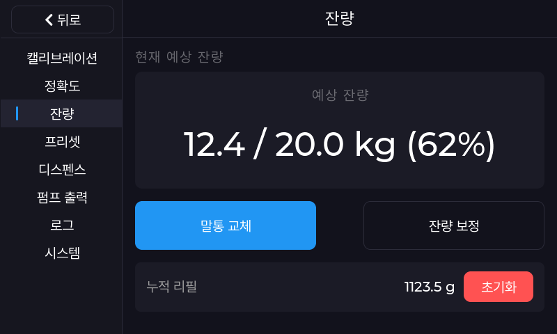
새 말통으로 교체할 때
- 출력을 멈추고 말통을 교체합니다.
내용물과 연결 상태를 확인합니다. 제품을 바꿀 때는 해당 제품의 취급·세척 기준을 따릅니다.
- 말통 교체를 누릅니다.
내용물의 양을 kg으로 입력하고 저장을 누릅니다. 20 kg이면 20을 입력합니다. 말통 무게는 제외합니다.
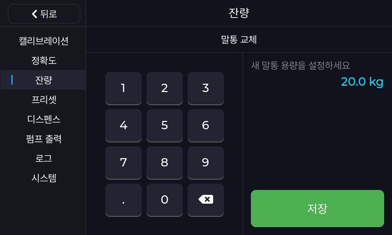
말통 교체 · kg 입력 - 새 잔량을 확인합니다.
입력한 양이 용량과 잔량의 기준이 됩니다. 부분 사용한 말통은 잔량 보정에서 실제 남은 양을 입력합니다.
표시 잔량을 맞출 때
잔량 보정을 누릅니다. 현재 남은 내용물의 전체 양을 kg으로 입력하고 저장합니다. 보충한 양만 입력하는 항목이 아닙니다.
사용 중 차감한 잔량은 매번 저장되지 않습니다. 재부팅 후 실제 남은 양과 비교해 잔량 보정으로 맞춥니다. 말통 교체·잔량 보정값은 저장됩니다.
누적 리필 초기화
필요한 누적값을 먼저 기록합니다. 누적 리필 → 초기화를 누르고 확인창에서 초기화를 선택합니다. 누적값만 0으로 바뀝니다. 말통 잔량과 보정값은 유지됩니다. 누적값은 재부팅 후에도 유지됩니다.
보정·검증에 사용한 액체도 예상 잔량에서 차감될 수 있습니다. 누적 리필은 고객 리필 사용량이며 재고·거래 기록과 구분해 사용합니다.
고객 화면과 프리셋
홈 → 관리 → 디스펜스 / 프리셋
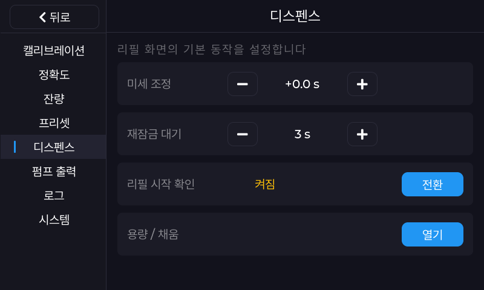
| 항목 | 설정의 의미 |
|---|---|
| 리필 시작 확인 | 켜짐: 화면을 탭하면 시작 확인 화면이 열립니다. 꺼짐: 화면을 탭하면 바로 리필합니다. |
| 재잠금 대기 | 리필 후 다음 이용까지 기다릴 시간입니다. 꺼짐이면 재잠금 대기를 두지 않습니다. |
| 용량 / 채움 → 스와이프 조절 | 고객이 위·아래로 밀어 리필량을 바꿀 수 있는지 정합니다. |
| 용량 / 채움 → 단위 | 스와이프 한 단계에서 바뀌는 리필량입니다. |
| 용량 / 채움 → 최대 | 스와이프로 선택할 수 있는 최대 리필량입니다. |
| 용량 / 채움 → 채움 색상 | 리필 화면에 표시할 액체 색상입니다. |
| 프리셋 → 디스펜스 | 고객 화면에서 기본으로 제시할 리필량입니다. |
| 프리셋 1~4 | 프리셋 화면의 각 버튼에 사용할 리필량입니다. |
설정 후 고객 화면에서 기본량·최대량·스와이프·시작 확인·종료 대기를 확인합니다.
펌프 출력과 연결
홈 → 관리 → 펌프 출력
배선이나 구동 방식을 바꿀 때 설정합니다. 기존 값을 기록한 뒤 설치 담당자가 확인한 값을 사용합니다.
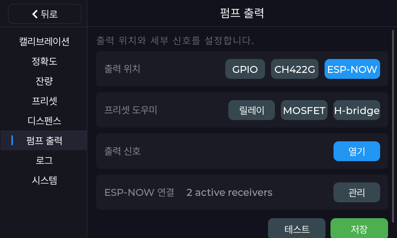
출력 위치와 신호
출력 위치에서 설치에 맞는 GPIO·CH422G·ESP-NOW를 선택합니다. 프리셋 도우미에서 릴레이·MOSFET·H-bridge를 선택하면 시작값이 채워집니다. 실제 배선에 맞는지 확인합니다.
- 출력 신호 → 열기로 들어갑니다.
설치에 맞는 신호 수, Signal A/B, 정지·정방향 패턴을 확인합니다. 핀 번호와 신호 레벨은 해당 기기의 배선을 기준으로 정합니다.
- 용기를 준비하고 테스트합니다.
테스트를 실행하면 실제 펌프가 작동합니다. 방향을 확인한 뒤 정지를 누릅니다. 직접 정지할 때까지 지켜봅니다.
- 정지 후 저장합니다.
로컬 출력은 테스트가 성공해야 저장할 수 있습니다. 저장을 누르고 설정을 다시 열어 확인합니다. 오류가 나오면 해결한 뒤 다시 저장합니다. 출력을 바꾼 뒤에는 보정을 점검합니다.
출력 신호 항목 읽기
신호 수 / Signal A·B: 사용할 제어 신호와 번호입니다.
정지·정방향·역방향 패턴: 각 상태의 신호입니다.
PWM / 기본 듀티 / PWM 주파수: 출력 구성이 지원할 때 사용합니다.
정상 토출 방향: 리필할 때의 방향입니다.
방향 전환 대기: 방향을 바꾸기 전 정지 시간입니다.
지원하지 않는 동작이나 오류가 나오면 설치 구성을 확인합니다.
펌프 리시버 연결
- ESP-NOW 연결 → 관리를 엽니다.
- 검색한 기기를 선택합니다.
수동 추가할 때는 설치 담당자가 제공한 식별값을 사용합니다.
- 리시버 이름을 지정합니다.
- 사용할 리시버를 ON으로 둡니다.
- 해당 펌프를 시험하고 작동과 정지를 확인합니다.
전체 해제를 누르면 등록된 연결을 모두 지웁니다.
제품 회수
역방향 회수가 가능한 설정에서는 홈에 제품 회수가 표시됩니다.
- 제품 회수를 누릅니다.
- 노란 회수 시작을 누릅니다.
- 작업이 끝나면 펌프 정지를 누릅니다.
자동 종료 시간이 없습니다. 경과 시간을 보며 작업하고 직접 종료합니다.
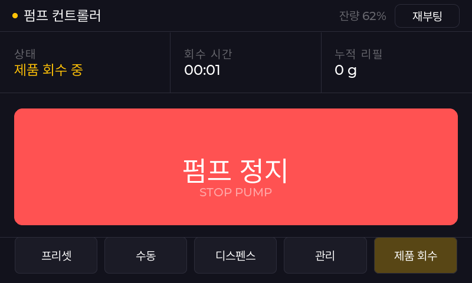
회수한 내용물의 재사용은 제품의 위생·취급 기준을 따릅니다.
Wi-Fi 연결 설정
홈 → 관리 → 무선 통신
- 스캔을 누릅니다.
- 연결할 네트워크를 선택합니다.
- 연결 정보를 입력하고 저장합니다.
- 화면의 연결 상태를 확인합니다.
해제를 누르면 저장된 공유기 연결 정보를 지웁니다.
Wi-Fi 끄기를 누르면 기기의 AP와 공유기 접속을 끕니다. 다시 사용하려면 Wi-Fi 켜기를 누릅니다. 펌프 리시버 통신은 별도로 유지하도록 구성되어 있습니다. 네트워크를 바꾼 뒤 리시버의 작동과 정지를 확인합니다.
시스템과 잠금
홈 → 관리 → 시스템
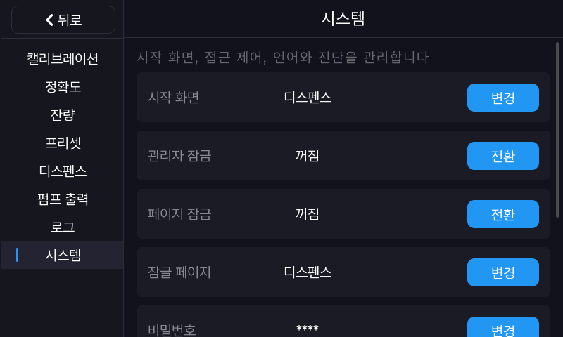
| 항목 | 설정의 의미 |
|---|---|
| 시작 화면 | 전원을 켰을 때 열릴 화면입니다. |
| 관리자 잠금 | 홈에서 관리 화면에 들어갈 때 비밀번호를 요구합니다. |
| 페이지 잠금 / 잠글 페이지 | 지정한 화면에서 다른 화면으로 이동하는 것을 제한합니다. |
| 비밀번호 | 관리자 접근에 사용할 비밀번호입니다. |
| 언어 | 기기 화면에 표시할 언어입니다. 한국어·영어를 지원합니다. |
| 메뉴 숨김 | 선택한 관리 항목을 메뉴에서 숨깁니다. 시스템 메뉴는 항상 표시됩니다. |
메뉴를 숨겨도 설정값은 유지됩니다.
페이지 잠금을 해제하면 재부팅 전까지 해제 상태가 유지됩니다. 고객에게 돌려주기 전 펌프를 멈추고 재부팅합니다. 시작 화면과 잠금을 확인합니다.
공장 초기화
공장 초기화를 누르고 확인창에서 초기화를 선택하면 기기 설정을 지우고 다시 시작합니다.
- 필요한 설치값·보정값·잔량을 먼저 기록합니다.
- 공장 초기화를 실행합니다.
- 출력·보정·잔량·고객용 설정을 다시 준비한 뒤 사용합니다.
기기를 다시 켜기만 하려면 재부팅을 사용합니다.
제품 취급과 관리
노즐·튜브·제품
- 제품 표시사항에 맞는 용기와 부품을 사용하고 서로 다른 제품이 섞이지 않게 관리합니다.
- 노즐이 고객 용기의 내용물이나 오염된 표면에 닿지 않도록 배치합니다.
- 튜브가 눌리거나 꺾이지 않게 하고, 연결부 누출·변색·경화·갈라짐이 있으면 사용을 멈추고 점검합니다.
- 세척제·농도·온도·주기는 제품과 튜브·노즐 등 액체가 닿는 부품 공급자의 지침을 따릅니다.
청소·교체 전후
- 리필을 종료하고 펌프 정지를 확인합니다.
튜브 분리나 부품 교체는 전원을 분리한 상태에서 합니다.
- 화면·컨트롤러·전원부와 액체가 닿는 부위를 나누어 청소합니다.
화면·컨트롤러·전원부에 액체를 직접 분사하거나 담그지 않습니다. 튜브·노즐 등 액체가 닿는 부위는 해당 부품의 세척 지침을 따릅니다.
- 재연결 후 누출과 흐름을 확인합니다.
시험 리필로 정지와 배출량을 확인합니다. 조건이 바뀌었다면 다시 보정합니다.
누출, 타는 냄새, 비정상적인 발열 또는 정지하지 않는 출력이 있으면 사용을 중단합니다. 액체가 묻은 전원부는 만지지 말고, 현장 안전 절차에 따라 전원을 차단하고 점검 담당자에게 알립니다.
문제 해결과 로그
펌프를 정지합니다. 화면 문구와 발생 순서를 기록한 뒤 해당 항목을 확인합니다.
실제 리필량이 목표와 계속 달라요.
- 제품 흐름·튜브·노즐을 확인합니다.
- 선택한 보정과 프로파일을 확인합니다.
- 실측량 단위와 빈 용기 제외 여부를 확인합니다.
- 미세 조정값을 확인합니다.
보정 검증과 실제 디스펜스 리필을 비교합니다. 필요하면 운영 조건에서 다시 보정합니다.
정밀값을 저장했는데 토출이 그대로예요.
저장한 프로파일을 확인합니다. 캘리브레이션 첫 화면에서 정밀 보정 사용을 누릅니다. 저장하거나 프로파일을 여는 것만으로는 운전에 적용되지 않습니다.
정밀 보정 사용 버튼이 비활성화되어 있어요.
선택한 프로파일에 저장된 정밀값이 있는지 확인합니다. 6회 입력 후 저장됨이 표시되어야 합니다. 다른 프로파일에 저장했다면 해당 프로파일을 선택합니다.
정밀 측정을 중간에 멈췄어요.
정지로 멈췄다면 같은 회차를 다시 측정합니다. 뒤로/취소, 프로파일·시간 변경, 재부팅 후에는 1회부터 다시 측정합니다. 중단한 회차의 양은 입력하지 않습니다.
보정 중 오류나 저장 실패가 나와요.
펌프가 사용 중인지, 출력 설정이 맞는지 확인합니다. 정밀 보정의 두 시간은 서로 달라야 합니다. 실측량은 0보다 커야 합니다. 계산·저장 오류가 나오면 기존 보정값이 유지됩니다. 오류를 해결한 뒤 다시 확정하고 저장 완료를 확인합니다.
리필을 시작할 수 없거나 액체가 나오지 않아요.
진행 중인 출력·보정·테스트를 끝냅니다. 말통·튜브·노즐을 확인합니다. 출력 위치, 켜진 리시버, 사용할 보정을 확인합니다. 펌프가 멈추지 않으면 고객 사용을 중단하고 현장 안전 절차를 따릅니다.
설정 메뉴가 사라졌어요.
관리 → 시스템 → 메뉴 숨김을 엽니다. 해당 항목의 선택을 해제하고 저장합니다.
재부팅 뒤 잔량이 맞지 않아요.
사용 중 차감한 잔량은 매번 저장되지 않습니다. 실제 남은 양을 확인해 관리 → 잔량 → 잔량 보정에 입력합니다.
로그와 점검 요청
홈 → 관리 → 로그에서 최근 메시지를 확인합니다. INFO는 정보, WARN은 주의, ERROR는 오류입니다. 필요한 메시지는 기록한 뒤 삭제합니다.
점검 요청에는 기기 버전, 발생 시각, 직전 조작, 화면 오류, 사용 제품, 목표량과 실측량, 선택한 보정·프로파일, 최근 변경한 설정을 함께 전달합니다. 비밀번호는 보내지 않습니다.